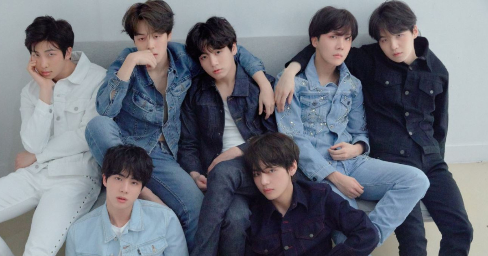

God is my number 1 Favorite because he is my creator and I'm his creation. God is always with me and he love's me.

BTS 방탄소년단 is my favorite K-pop Boy Group in South Korea, they know how to dance, sing, and rap. They are talented to music and arts and they're good looking
They came to my life when the I feel down because of my family.
Because of their music and their presence they inspired me to love myself
because of them I'm happy and they tech me to it's okay to be you, no one's perfect.
They thought me to speak myself and courage myself for what I want or what I want to be
They make me happy

I loved cat because they adorable and cute sometimes they're not that sweet unlike dog but they make me happy.
I like them because I compared myself into a cat because they have similarities when it comes to attitude.